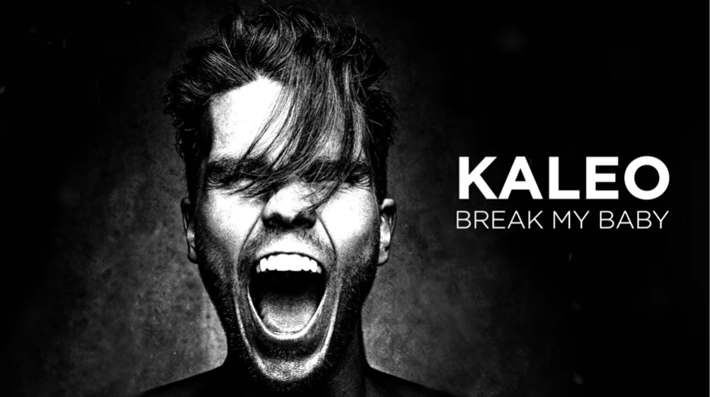

2012년 대뷔
2012 Iceland Airwaves 음악 축제에서 호평을 받은 소수의 쇼로 커리어를 시작했습니다.
Kaleo는 아이슬란드 국영 방송 RÚV 의 라디오 방송국 Rás 2 에서 큰 인기를 끌었던 노래
Vor í Vaglaskógi를 취재하여 명성을 얻었습니다.
2013–2019 : 주요 음반사 계약, 미국 출발, A / B 및 투어링
이번 메이저 레이블 데뷔 앨범 A / B 를 홍보하기 위해
또 다른 세 개의 싱글 Way Down We Go ,No Good , I Ca n't Go On Without You가 발매되었습니다.
앨범은 빌보드 200에서 16 위에 올랐고, 이를 홍보하기 위해 핸드프린트 투어를 시작 했습니다.
2020– 현재 : Surface Sounds
KALEO는 2020 년 1 월 15 일 A / B 이후 첫 번째로 발매 된 음악인
I Want More와 Break My Baby두 곡을 발매했습니다.
2021 년 2월 5일, 그들은 2020 년 7월 5일 Break My Baby의 라이브 버전을 출시했습니다. 5 번째 싱글Skinny는 2021년 4월 1일 발매되었으며, 4월 23일 새 앨범 발매일이 발표되었습니다.
뮤지컬 스타일
Kaleo의 음악 스타일은 블루스 록, 인디 포크 및 얼터너티브 록 과 같은 장르의 영향을 받았습니다.
